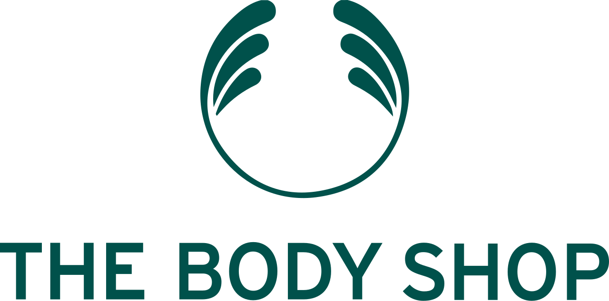

홈 > 브랜드 매거진 > 클리오
클리오
클리오(CLIO)는 한현옥이 1993년 창업한 대한민국의 색조 화장품 전문 브랜드다. 아이메이크업을 강점으로 색조 시장에서 성장한 코스메틱 브랜드다.
산업 분야 뷰티·퍼스널케어 · 공개 등급 디렉토리 · 브랜드 평가 4.2 ★
한눈에 보는 브랜드
클리오(CLIO)는 한현옥이 1993년 창업한 대한민국의 색조 화장품 전문 브랜드다. 아이메이크업을 강점으로 색조 시장에서 성장한 코스메틱 브랜드다.
브랜드 관점
클리오는 아이메이크업 강점을 바탕으로 성장한 국내 색조 화장품 전문 브랜드다. 설립·운영 주체, 핵심 제품, 시장 포지션을 함께 보면 뷰티·퍼스널케어 안에서의 위치가 또렷해진다.
시작과 성장
한현옥이 1993년 창업해 색조 화장품 전문 기업으로 성장시켰다. 아이라이너·아이섀도 등 아이메이크업에서 두각을 나타냈다.
브랜드 아이덴티티
변화를 즐기는 소비자를 겨냥한 색조 중심의 K-뷰티 메이크업 전문 브랜드다.
제품과 서비스
아이라이너·아이섀도·립·베이스 등 색조 화장품을 전개하며, 아이메이크업 라인이 핵심이다.
현재 상태
타임라인
정리된 연도형 이벤트가 없습니다.
BI/CI 변천사
확인된 BI/CI 이미지가 아직 없습니다.
함께 읽을 브랜드
롬앤(rom&nd)은 아이패밀리에스씨가 2016년 론칭한 대한민국의 색조 화장품 브랜드다. 립틴트·아이섀도를 중심으로 10·20대에게 인기를 얻은 메이크업 브랜드다.

뷰티·퍼스널케어 · 매거진 완성더바디샵더바디샵은 화장품을 윤리적 소비와 사회적 메시지를 담는 매개로 확장한 브랜드다. 제품의 효능만큼이나 동물실험 반대, 공정 거래, 환경 의식 같은 태도가 브랜드 선택의...
 뷰티·퍼스널케어 · 자료 기반코스맥스
뷰티·퍼스널케어 · 자료 기반코스맥스코스맥스(COSMAX)는 1992년 설립된 한국의 화장품 ODM 기업으로, 세계 1위 화장품 ODM 제조사로 꼽힌다.
 뷰티·퍼스널케어 · 매거진 완성러쉬
뷰티·퍼스널케어 · 매거진 완성러쉬러쉬는 영국의 뷰티·퍼스널케어 브랜드로, 성분, 사용감, 패키지, 이미지 언어가 구매 판단에 직접 연결되는 영역입니다.
 뷰티·퍼스널케어 · 편집 검수베네피트
뷰티·퍼스널케어 · 편집 검수베네피트베네핏 코스메틱스(Benefit Cosmetics)는 1976년 쌍둥이 자매 진·제인 포드가 미국 샌프란시스코에서 창업한 화장품 브랜드로, 1999년 LVMH가 인수...
 뷰티·퍼스널케어 · 자료 기반LG생활건강
뷰티·퍼스널케어 · 자료 기반LG생활건강LG생활건강(LG H&H Co., Ltd.)은 화장품·생활용품·음료를 아우르는 한국 기업으로, 현 법인은 2001년 LG화학에서 분할 신설됐다.
뷰티·퍼스널케어 · 자료 기반한국콜마한국콜마(Kolmar Korea)는 1990년 설립된 한국의 화장품 ODM 기업으로, 국내에 ODM 사업모델을 처음 도입했다.
 뷰티·퍼스널케어 · 자료 기반아누아
뷰티·퍼스널케어 · 자료 기반아누아아누아(Anua)는 더파운더즈가 전개하는 대한민국의 저자극 스킨케어 브랜드다. 어성초를 핵심 성분으로 한 진정 토너로 미국·일본 등에서 인기를 얻은 K-뷰티 브랜드다...